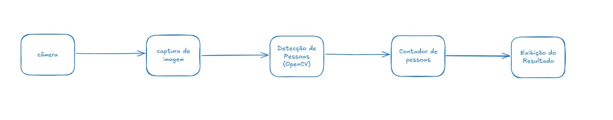
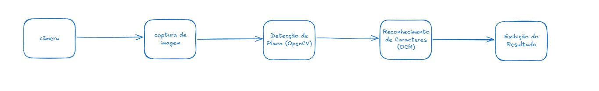

Etapa 2: Modelagem Funcional do Sistema (MF)
No documento de modelagem funcional, detalhamos a concepção dos dois sistemas propostos: Contagem Automática de Pessoas e Leitura Automática de Placas de Veículos. Abaixo estão descritos os blocos funcionais, fluxos de dados e tabelas que esclarecem o funcionamento de cada parte do sistema.
1. Sistema de Contagem Automática de Pessoas
Diagrama de Blocos
Descrição dos Blocos
| Bloco | Entrada | Processamento | Saída |
|---|---|---|---|
| Câmera | Ambiente real | Captura de vídeo em tempo real | Frames de vídeo |
| Captura de Imagem | Frames de vídeo | Leitura dos frames para processamento | Imagem/frame individual |
| Detecção de Pessoas (OpenCV) | Imagem/frame | Processamento com modelo de detecção de pessoas | Lista de pessoas detectadas |
| Contador de Pessoas | Lista de pessoas detectadas | Contagem dos objetos/pessoas | Número total de pessoas |
| Exibição do Resultado | Número total de pessoas | Apresentação visual (tela, dashboard, etc.) | Informação exibida ao usuário |
2. Sistema de Leitura Automática de Placas de Veículos
Diagrama de Blocos
Descrição dos Blocos
| Bloco | Entrada | Processamento | Saída |
|---|---|---|---|
| Câmera | Veículo passando | Captura de vídeo/imagem | Frames de vídeo |
| Captura de Imagem | Frames de vídeo | Leitura dos frames | Imagem/frame individual |
| Detecção de Placa (OpenCV) | Imagem/frame | Localização da placa no frame | Imagem da placa recortada |
| Reconhecimento de Caracteres (OCR) | Imagem da placa | Reconhecimento dos caracteres (ex: pytesseract) | Texto da placa |
| Registro/Exibição do Resultado | Texto da placa | Armazenamento ou exibição ao usuário | Informação registrada/exibida |